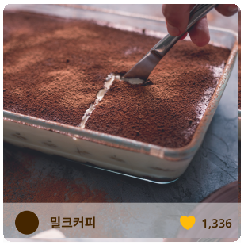

두부 티라미수
다이어트 기간에도 건강하게 즐길 수 있는 티라미수입니다. 생두부 냄새에 민감하신 분은 두부를 꼭 데쳐주셔야 합니다. 올리브오일, 레몬즙, 메이플 시럽 등을 다양하게 활용하면, 생두부 냄새를 잡는데 도움이 됩니다.
참고 있던 요리 본능을 깨워보세요!

오늘의 재료


다이어트 기간에도 건강하게 즐길 수 있는 티라미수입니다. 생두부 냄새에 민감하신 분은 두부를 꼭 데쳐주셔야 합니다. 올리브오일, 레몬즙, 메이플 시럽 등을 다양하게 활용하면, 생두부 냄새를 잡는데 도움이 됩니다.